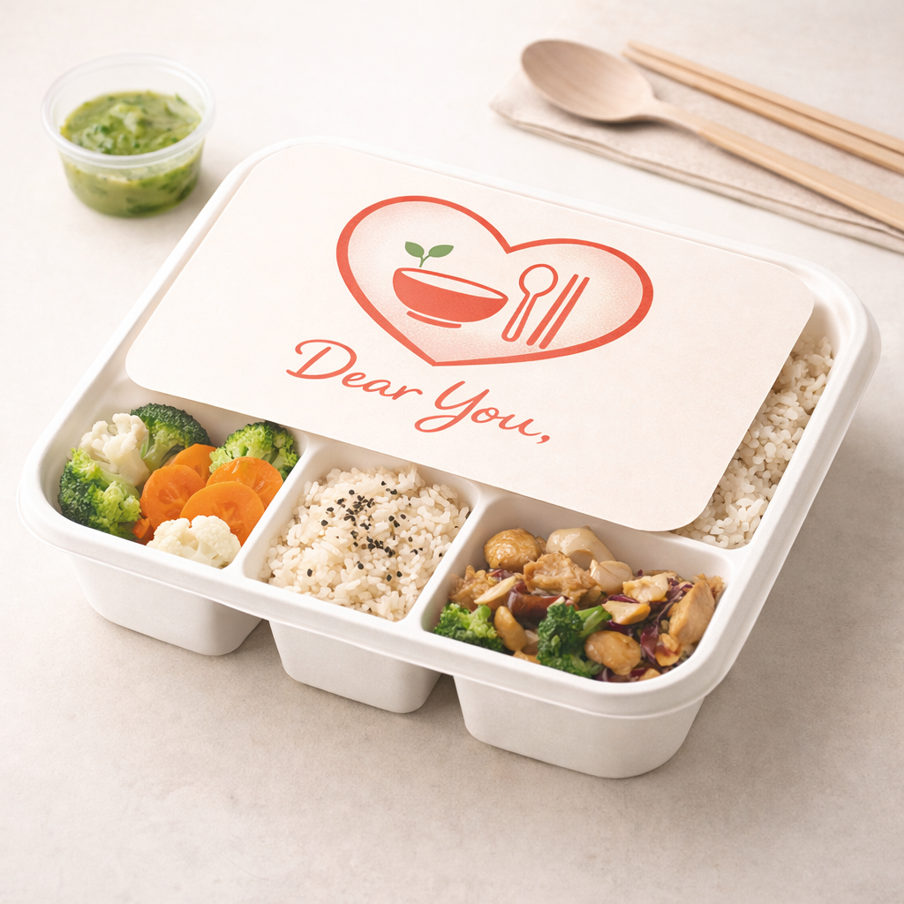
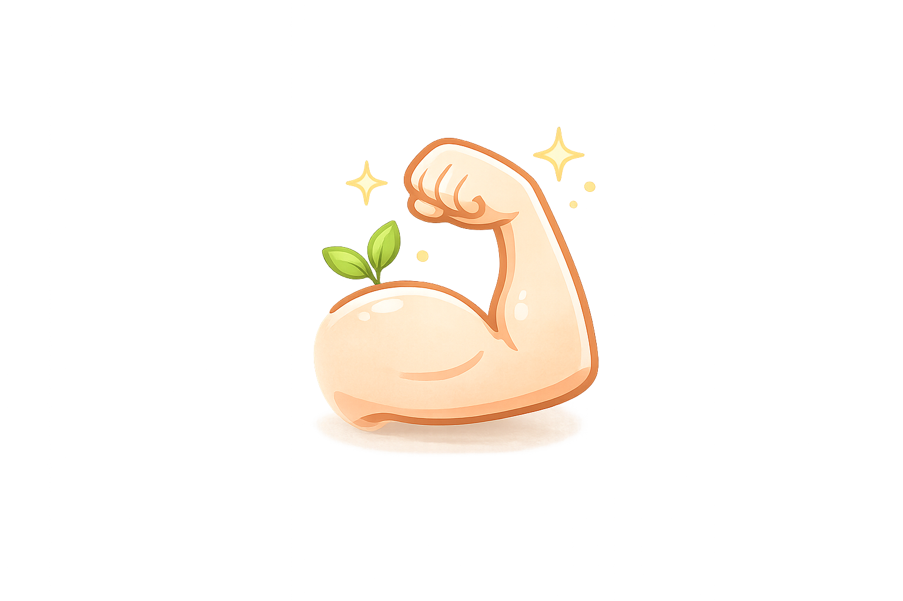
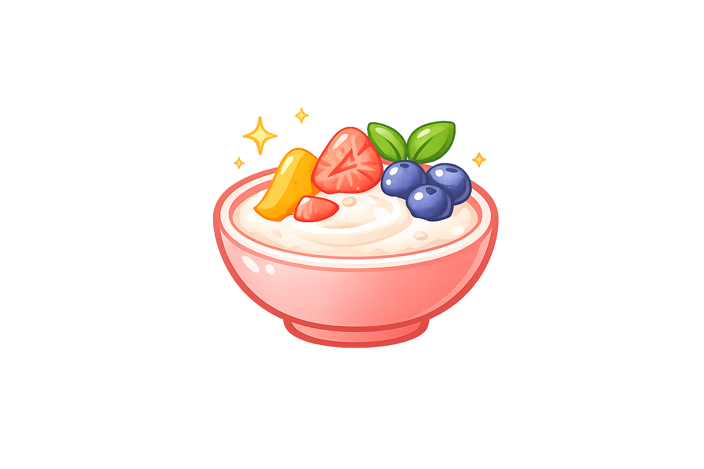

매끼니가 치료의 일부가 되는 암환우분들께 따뜻한 마음과
균형잡힌 영양을 담은 한끼를 정성스럽게 전하고 싶다는 뜻을 담았습니다.
오늘의 이 식사가 작은 새싹처럼 회복의 시작이 되기를 바라는 마음,
그 진심을 'Dear You'라는 이름에 담았습니다.
항암치료중 입맛이 없거나 수술 후 빠른 회복이 필요 하신분
매일 어떤 식단을 해야 할지 고민하는 보호자분
홀로 계시는데 식단관리 하기 어려운분
임상영양사가 설계하고 전문셰프가 조리하여 영양과 맛의 밸런스를 맞췄습니다.
무항생제 고기, 유기농 채소 등 엄격하게 선별된 식재료만 사용합니다.
환자분의 회복뿐만 아니라, 가족의 마음에서 생각하며 정성껏 담았습니다.
이번주 추천 메뉴
이런날엔 이렇게
입맛이 없을 땐 부드러운 흰죽이나 스프 드세요.

기력회복엔 닭가슴살 샐러드나 북어미역국 드세요.

소화가 안될 땐 과일 요거트 드세요.